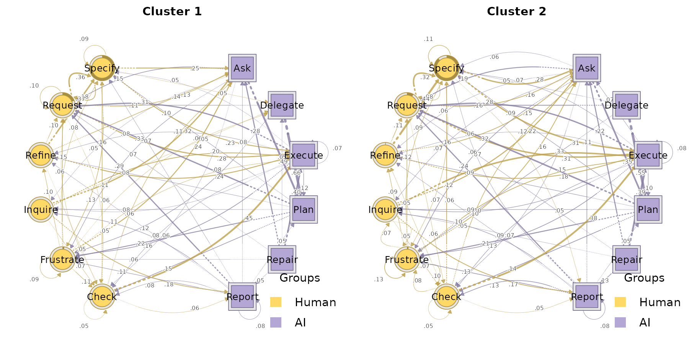
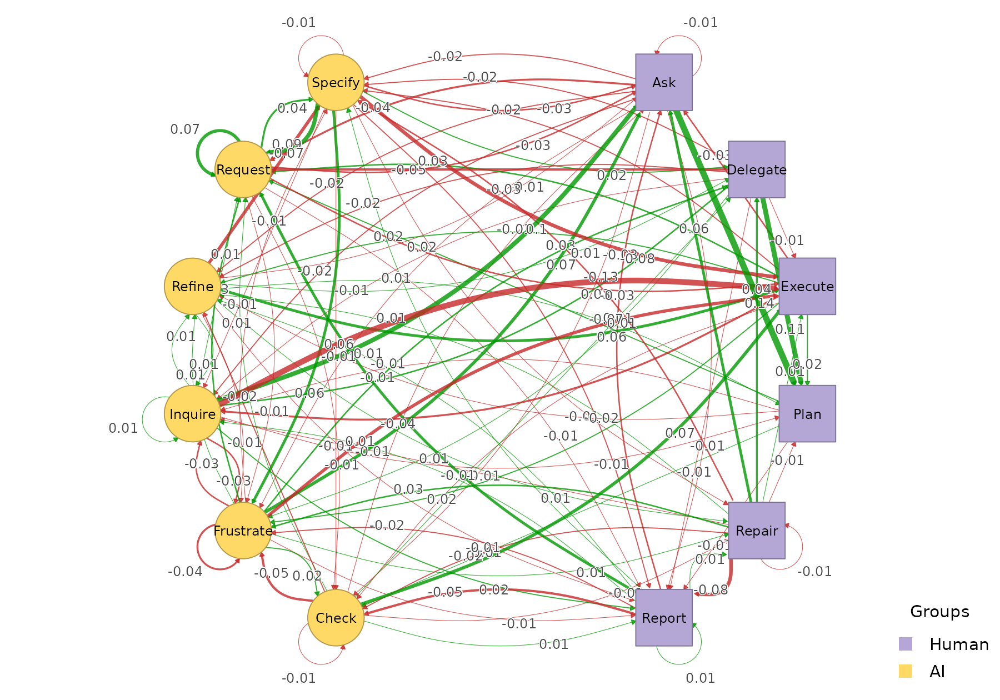

build_htna() accepts clustering results from the
Nestimate ecosystem as first-class inputs. You can hand a
clustering object straight to build_htna() and get back an
htna-aware result with the actor partition already
attached.
The clustering constructors covered here all operate at the
cohort level: sessions are grouped into k
clusters and one htna network is built per cluster. The result is an
htna_group, identical in shape to what
build_htna(..., group = ...) returns, so every grouped-htna
wrapper (plot_htna(), plot_htna_diff(),
permutation_htna(),
centrality_stability_htna(), etc.) works unchanged.
Setup
library(htna)
data(human_ai)
net <- build_htna(human_ai, actor_type = "actor_type")
Nestimate::build_clusters() (distance-based)
build_clusters() computes a pairwise dissimilarity
between sessions (Hamming by default) and applies a partitioning
algorithm (pam by default) to split them into k
cohorts. Feed the returned net_clustering object straight
to build_htna():
cc <- Nestimate::build_clusters(net, k = 2, seed = 1)
grp <- build_htna(cc)
class(grp)
#> [1] "htna_group" "netobject_group" "list"
names(grp)
#> [1] "Cluster 1" "Cluster 2"The result is an htna_group: one htna network per
cluster, each carrying the same actor partition inherited from
net. Plot the two cohorts side by side:

par(op)Because both networks share the alphabet, they compose with the comparison wrappers:
plot_htna_diff(grp[[1]], grp[[2]])
Nestimate::cluster_mmm() (mixture of Markov
chains)
cluster_mmm() fits a k-component mixture of
first-order Markov chains via EM and assigns each session
probabilistically to a component. The returned net_mmm
object is also a legal build_htna() input:
cm <- Nestimate::cluster_mmm(net, k = 2, seed = 1)
grp_m <- build_htna(cm)
names(grp_m)
#> [1] "Cluster 1" "Cluster 2"grp_m is again an htna_group, ready to feed
any of the grouped wrappers.
build_clusters() and cluster_mmm() answer
different questions: build_clusters() groups sessions by
trajectory similarity under a fixed distance metric;
cluster_mmm() groups sessions by the first-order transition
process most likely to have generated them. The Nestimate documentation
covers the trade-offs.
Choosing the number of clusters
Both constructors take a k. Two Nestimate helpers sweep a range of candidate values and score them, so the choice does not have to be made blind. A third helper reports per-cluster quality once a particular fit has been settled on.
For build_clusters():
cluster_choice()
cluster_choice() fits the same partitioning algorithm at
each k in a grid and reports the average silhouette width, mean
within-cluster distance, and the cluster-size range. Higher silhouette
(closer to 1) is better; extreme size ratios flag partitions with a
single dominant cluster and a tiny satellite. The row flagged
<-- best in the print method is the largest silhouette
across the grid.
Nestimate::cluster_choice(net, k = 2:4)
#> Cluster Choice (sweep: k)
#>
#> k silhouette within_dist sizes ratio best
#> 2 0.756 56.274 [11, 418] 38.000 <-- best
#> 3 0.501 49.323 [11, 349] 31.727
#> 4 0.503 48.827 [5, 349] 69.800For cluster_mmm(): compare_mmm()
compare_mmm() fits the mixture at each candidate
k and returns the standard information criteria
(AIC, BIC, ICL) plus the average
posterior probability (AvePP, higher = more confident
assignments) and normalised entropy (lower = more separated components).
The row flagged <-- BIC is the best BIC across the grid;
ICL trades off fit against classification uncertainty and is often
preferred when the cohorts must be used for downstream inference.
Nestimate::compare_mmm(net, k = 2:3, seed = 1)
#> MMM Model Comparison
#>
#> k log_likelihood AIC BIC ICL AvePP Entropy converged
#> 2 -36345.27 73264.54 74430.17 74510.27 0.9211857 0.2658902 TRUE
#> 3 -36115.29 73092.59 74843.08 74932.82 0.9136712 0.1967376 TRUE
#> best
#> <-- BIC
#> Validating a specific fit: cluster_diagnostics()
Once you have picked a k and fit the clustering, pass the
result to cluster_diagnostics() to see per-cluster sizes,
mean within- cluster distance, and silhouette. Small satellites or
negative silhouettes on one cluster indicate that the partition is
stretched by outliers even if the aggregate score is acceptable.
Nestimate::cluster_diagnostics(cc)
#> Cluster Diagnostics (distance) [pam / hamming]
#> Sequences: 429 | Clusters: 2
#> Quality: silhouette = 0.300
#>
#> Cluster N Mean within-dist Silhouette
#> 1 288 (67.1%) 36.300 0.552
#> 2 141 (32.9%) 93.620 -0.215Comparing the resulting cohorts
Once clustering has produced an htna_group,
compare_htna() computes a descriptive summary of every
cohort pair in one call — you do not need to pull out individual cohorts
by hand.
comparisons <- compare_htna(grp)
class(comparisons)
#> [1] "htna_comparison_group" "list"
names(comparisons)
#> [1] "Cluster 1 vs Cluster 2"Each element is an htna_comparison: the
Nestimate net_comparison fields
(summary_metrics, edge_metrics,
network_metrics, matrices,
difference_matrix) plus an htna-aware
actor_pair_metrics table that summarises the difference for
every directed actor-type block:
one <- comparisons[[1]]
one$summary_metrics
#> category metric value
#> 1 Weight Deviations Mean Abs. Diff. 0.02025425
#> 2 Weight Deviations Median Abs. Diff. 0.01020158
#> 3 Weight Deviations RMS Diff. 0.03290003
#> 4 Weight Deviations Max Abs. Diff. 0.14058447
#> 5 Weight Deviations Rel. Mean Abs. Diff. 0.24305095
#> 6 Weight Deviations CV Ratio 1.09485122
#> 7 Correlations Pearson 0.95470530
#> 8 Correlations Spearman 0.94189862
#> 9 Correlations Kendall 0.80856141
#> 10 Correlations Distance 0.94324186
#> 11 Dissimilarities Euclidean 0.39480036
#> 12 Dissimilarities Manhattan 2.91661145
#> 13 Dissimilarities Canberra 26.14861488
#> 14 Dissimilarities Bray-Curtis 0.12152548
#> 15 Dissimilarities Frobenius 0.16117657
#> 16 Similarities Cosine 0.97133126
#> 17 Similarities Jaccard 0.78328539
#> 18 Similarities Dice 0.87847452
#> 19 Similarities Overlap 0.87847452
#> 20 Similarities RV 0.95884110
#> 21 Pattern Similarities Rank Agreement 0.88636364
#> 22 Pattern Similarities Sign Agreement 0.97916667
head(one$actor_pair_metrics)
#> source_actor target_actor n_cells n_nonzero_x n_nonzero_y n_changed
#> 1 Human Human 36 35 35 35
#> 2 Human AI 36 36 36 36
#> 3 AI Human 36 34 36 36
#> 4 AI AI 36 27 28 28
#> mean_difference mean_absolute_difference rms_difference
#> 1 0.001072078 0.01887634 0.02928339
#> 2 -0.001072078 0.02612978 0.04044685
#> 3 -0.005198687 0.01894510 0.02313669
#> 4 0.005198687 0.01706576 0.03606767
#> max_absolute_difference
#> 1 0.09083051
#> 2 0.13076689
#> 3 0.05596170
#> 4 0.14058447plot() dispatches through
plot.htna_comparison_group() and draws one panel per pair
with the actor styling preserved:
plot(comparisons)For a full statistical test of the same pairs, feed the group to
permutation_htna() instead — see the grouped vignette.